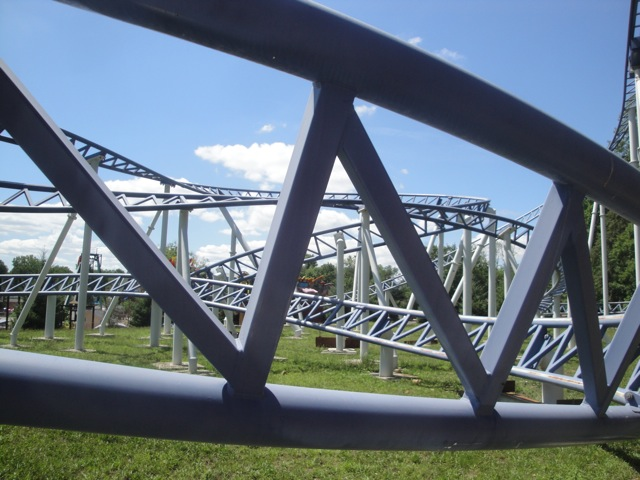
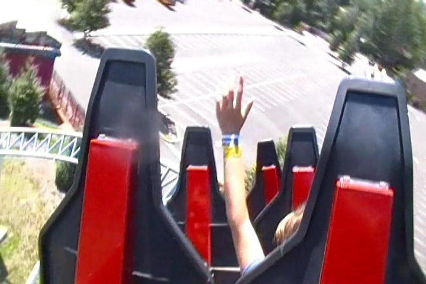
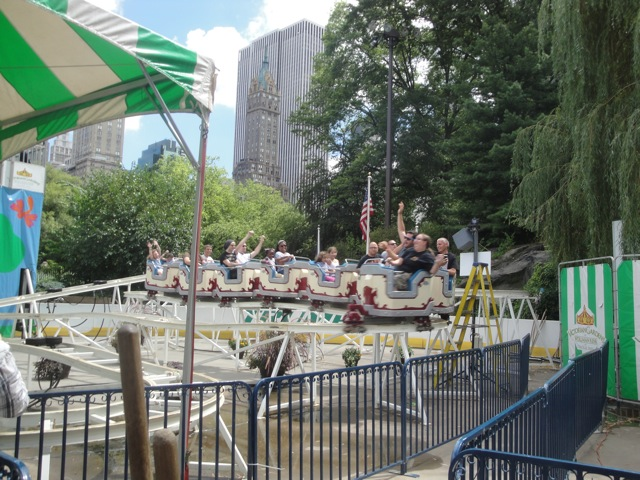
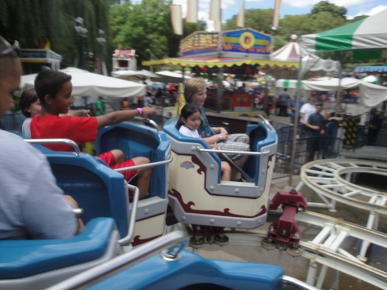
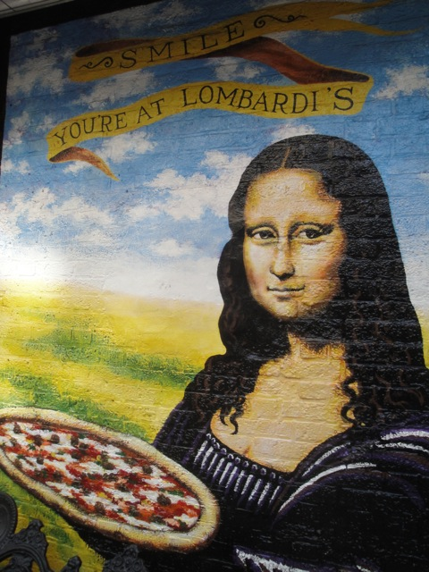

TPR's Northeast Trip
Bowcraft & NYC
Coney Island
Quassy Lake Compounce Six Flags New England Palace Playland Funtown Splashtown Canobie Lake Park La Ronde Great Escape Six Flags Great Adventure
My big trip has finally come. TPR's Northeast Trip. While this summer has contained a lot of fun with credit whoring, cliff jumping, and working at SFMM, this is without a doubt, the biggest and best thing that happened this summer. So excited that it's finally here!!!! =)
Ventura at sunset. No seriously, our captain said "We're currently flying over Ventura and will reach San Francisco in 50 minutes." So I had to snap a photo. See, those are indeed the Channel Islands we're flying over. Hi Cody!!!!
 Sweet!!!! First park of the trip!!!! =)
Sweet!!!! First park of the trip!!!! =)
 Man, this place is a dump. I was expecting something along the lines of Scandia, but this place makes Scandia look like Disneyland in comparison.
Man, this place is a dump. I was expecting something along the lines of Scandia, but this place makes Scandia look like Disneyland in comparison.
Somehow, I have a feeling that that Subway has cockroaches.
This park is amazing. They managed to get the rights to not only show Pinnochio from Disney, but they also got Warner Bros to give them the rights to Porky Pig as well. Because when I think quality, I think of Pinnochio and Porky Pig.

But whatever. No need to talk about copyrighted characters. We have credits to get.

You know, for being in a dumpy little credit whore park, this is a really good coaster.
 The best way for me to describe Crossbow would be to call it a giant rollerskater on steroids.
The best way for me to describe Crossbow would be to call it a giant rollerskater on steroids.
Oh look. Hannah Barbera gave Bowcraft the right to the Flinstones as well.
 Oh yeah. Bowcraft still has one more credit for us to get.
Oh yeah. Bowcraft still has one more credit for us to get.
Cha Ching!!!!
Dude!!! We got the credits already. Let's get the hell out of this dump and go somewhere that's actually cool!!!
Yeah. Like New York City. Let's go there!!
If you ever wanted to know what the inside of the Lincoln Tunnel looked like, it looks something like this.
Yep. We have arrived in New York City all right.
Better hope that the people on the bottom layers don't end up sleeping in or else you're screwed.
"Excuse me, but just where could I find a taxi?"
 All right. We're just gonna hang out in Central Park now. Right?
All right. We're just gonna hang out in Central Park now. Right?
Ooh. What's that I see right there?
Ooh. It's a small little park. So much for just hanging out in New York City.

And what do you know. They've got a credit.

Cha Ching!!!
"You know, riding a kiddy coaster in the middle of Central Park just isn't pathetic enough for me. So make things even more pathetic, I actually bought my on ride photo."
All that credit whoring made me hungry. Who wants a waffle?
That is just as good as it looks.
All right. Let's check out FAO Schwartz. The biggest Toystore in New York City.
SO MUCH NERDS!!!!!!!!
Oh, and you can make your on freaking Muppet here!!! Which is totally awesome!!! I so would've done it if it wasn't $100!!
"This is my muppet, and if you mess with me, he will come and kick your ass!!!"
All right. Time to head over to Scott's Pizza Tour. Let's meet up wih him and take the Subway.
L.A's Public Transportation Sucks!!!!
Oh yeah. Nothing makes a better gift than Rice Pudding!!!
And for dinner, we went on one of Scott's Pizza Tours, which hunts and shows you all of the best pizza New York has to offer.
The first stop on Scotts Pizza Tour would be Lombardi's Pizza.

The Mona Lisa approves of Lombardis.
This was our Pizza Tour Survival Kit, you know, just in case anything came up during the tour.
As part of the Pizza Tour, we got to see the coal brick oven that cooked the pizzas!!
"Hmm. I wonder if those coals are hot? Maybe I should touch them and find out."
The Pizza served at Lombardis is called a Margarita Pizza, which pretty much means unmixed pizza. It was very good. The cheese was strong, the crust was crispy, and the tomato sauce had a nice zing to it. (Though that may have just been the parsley. Nah.) Though one problem I had with it was the inconsistancy (As you can see in the photo.) Sometimes you got a real cheesy bite, while other times was pure tomato.
Next stop on Scotts Pizza Tour would be Arturo's Pizza. This place was also a coal brick oven place like Lombardis, but it was very different. So the two showed us how two coal brick oven places can be so different.
The pizza at Arturos was also really good. The cheese was all hot and melty, and the sauce was very sweet and tangy. And it all mixed together really well.
"DUDE!!!! STOP TRYING TO EDUCATE ME AND JUST GIVE ME SOME MORE F*CKING PIZZA!!!!"
New York City is awesome.
It's about damn time they got started on the construction on Freedom Tower/New World Trade Center/Fear Tower/Whatever the hell you wanna call it.
The final pizza place we went to was Famous Ben's Pizza, a Silican Pizza Place.
OMG!!!! THE PIZZA HERE!!!!!! SO F*CKING GOOD!!!!!!! The sauce is really sweet and the bread crumbs and onions that they put on top really give it a powerful zing. It just mixes together so well and pretty much is an orgasm in your mouth. Totally the Maverick of Pizzas, and by far, my favorite pizza of the night.
After the awesome pizza of Scott's Pizza Tour, we went to Roccos for some Canolies.
These canolies were awesome. Hot and fresh right out of the oven with the creme filled right before they were served to you.
 And that concludes Day 1. Crappy Credits and New York Awesomeness. Tomorrow, we're off to Coney Island to check out one of the most famous coasters, the Coney Island Cyclone.
And that concludes Day 1. Crappy Credits and New York Awesomeness. Tomorrow, we're off to Coney Island to check out one of the most famous coasters, the Coney Island Cyclone.
Coney Island
Home